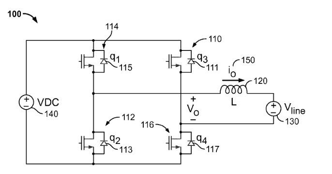

Introduction
My parents recently installed solar panels on their roof to transistion to renewable energy use while at the same time breaking their dependence on the grid for energy supply. In addition to solar panels, microinverters for each solar panel and a centralized battery are required to run the house off of solar energy. The primary function of the microinverters is to convert the low voltage DC power coming from each panel into high voltage AC power that can be used in the house circuits. The battery allows energy to be stored when more energy is produced by the panels than is used in the house. When one of the Sunpower MI-C-320-US208/240-00 Microinverters failed on my parents roof, I had the opportunity to crack it open and try to understand how it worked.

Front View

Back View
Before I get into the teardown, I'd like to discuss a bit of the history of how microinverters came to be and what other products are used as alternatives based on some quick internet searches I did. Any solar energy system includes some kind of inverter to convert the DC output of the panel to the AC input used in power lines, homes, and appliances. Inverters accomplish this conversion from DC to AC fundamentally through a series of electrically controlled switches (usually IGBTs or high-voltage MOSFETs) that are rapidly opened and closed over intervals oscillitating in length (i.e Pulse Width Modulation (PWM)) imitating the sinusoidal nature of alternating current. When solar panels first came about commercially, the energy was converted from AC to DC using string inverters. Several solar panels would be connected together through linking wires, forming a "string" of solar panels, and then fed into one centralized inverter unit. Daisy-chaining the solar panels in this fashion makes for easy installation, but when the output of one solar panel in the string is lowered, all the rest in the string are limited by that weakest link. To combat this issue, power optimizers can be placed on each panel to modulate the DC power output of each panel so that they can function at their highest output independent of the output of others in the string. The power optimizers on each panel also allow one to monitor the output of individual panels rather than just the output of the whole string. Despite these improvements, power optimizers still require the use of a centralized inverter which limits the size of the solar panel array that can be used and introduces a central point of failure capable of shutting down all system functionality. Adding an inverter unit under each solar panel—microinverters—addresses these problems at the expense of higher part and installation costs. String inverters, inverters with power optimizers, and microinverters each provide different benefits and so the decision of which to use is often left to the user with recommendations provided based on their particular application.
Potting Compound
Although I had heard of NEMA ratings before this teardown in describing how well smart phones were sealed, the experience of opening up this microinverter gave me a much greater appreciation for what exactly it means to seal electronics. The National Electrical Manufacturers Association (NEMA) develops standards for the manufacture of electronics. One such standard (NEMA Standard 250) is used to categorize the performance of electrical enclosures against environmental contaminants such as dirt and moisture. Based on an online seller for this product, the microinverter has a NEMA Enclosure Rating of NEMA 1, the lowest on the rating scale. At this level, the microinverter enclosure is only expected to protect people from any hazardous parts that may be contained inside and prevent any solids like dirt from entering the enclosure in indoor environments. This hardly seems like an appropriate rating for a product that will be sitting on the roof exposed to windswept dust, rain, and hot sunshine. Diassembling the product seemed to reaffirm that this product deserved a much higher NEMA Enclosure Rating than had been given by the online seller.
The first step in the diassembly was removing the metal back cover secured by ten metal tabs mated to slots on the body. This alone would have likely been sufficient for a NEMA 1 rating. Underneath the metal cover lay a thick plastic sheet that I was able to peel back using just my fingers. What lay below shocked me. The entire printed circuit assembly (PCA) had been submerged in a potting compound having the consistency of rubber and a sweet fruity odor. Being completely submerged in this rubber-like compound, the microinverter PCA was hermetically (airtight) sealed. It's hard to imagine what could damage the circuit board except maybe an explosion. It was then that I learned how long this teardown would take if I wanted to get an idea for how the microinverter worked. Using a flathead screwdriver, pair of needle nose pliers, and a box cutter I (with help from my dad from time to time) removed as much of the potting compound as possible to expose the PCA that lay underneath.

Sealed Microinverter PCA

Potting Compound Exposed from Underneath Stiff Plastic Sheet

PCA Components Partially Exposed From Excavation

Exploded View with PCA Fully Exposed
Hoping to find more information about how the microinverter worked, I scanned through Sunpower's AC module (used synonymously with microinverter I think in this case) patents—for which they had provided a link on the back cover of the microinverter. Most of the patents appeared to focus on the circuit schematics of the microinverter, but one included sketches of the physical structure of one of their microinverters, albeit an older and substantially different looking model. Nonetheless, they discussed the potting process somewhat and I found it interesting that they mentioned the potting compound electrically insulates components from one another in addition to protecting the board from environmental effects. I imagine overheating is also a major concern when submerging boards in a thick insulating potting compound as the electrical components cannot release heat as quickly as when they are exposed to just air. The patent, linked here, mentioned that electrical components likely to release a lot of heat could be partially exposed or connected to heat sinks exposed to the surface to ensure they don't overheat.
Microinverter PCA
Using the silkscreen PCB labels, patent schematics, and online resources for power electronics I did my best to identify the important components of this microinverter PCA. With that being said, the labels in the picture below are merely educated guesses. I've had no formal training in electrical engineering. Furthermore, I'm missing a large chunk of information since I wasn't able to easily remove the board and examine the components mounted on the underside.

Microinverter PCA
There's a lot happening on this PCB, but some generalizations can be made across the board. The blue, green, and gray plastic boxes are likely film capacitors. The yellow disc-like nubs at both the DC input and AC input are also capacitors, although I'm not sure what kind. The metals blocks with exposed copper wiring are fundamentally just large inductors or sets of inductors. These inductors include the blocks labelled inductor, transformer, and choke. The compact black boxes with many pinouts are integrated circuits (ICs), but what function they serve is not easily evident from the outside. I guessed their functionalities based on their size and relative locations on the board. The large black box in the bottom right didn't appear to be labeled. Any number of things could be hidden under the enclosure, but given it's heft I guessed it might be a backup battery. I'm guessing this backup battery is used when the solar panel isn't producing any energy and the microinverter wants to continue communicating with the centralized power distribution system to tell it that the microinverter is still functioning properly despite it not producing any energy. This hypothesis was inspired by the fact that the people who replaced the inverter stated that they had received notice from the microinverter that it had failed. One thing that I saw that I hadn't seen before were test points (silkscreen labeled TP). Test points are conductive discs on the PCB where someone could stick a multimeter probe to take measurements, likely for quality assurance purposes. Beyond that, there are tons of tiny surface mount capacitors, resistors, diodes, transistors, and ICs.
Looking at the PCA gives us some idea of what components play a role in the microinverter operation, but it doesn't tell us how the product works. To understand this, I went to the patent material for this microinverter and supplemented this with internet searches on power electronics concepts. Generally, the functionality of the microinverter can be split into two stages: input processing and output processing.
Big Picture Block Diagram of Microinverter (US 8,284,574)
Input Processing
The main purpose of the input processing stage is to maximize the power draw from the solar panels and to then step-up the voltage. The power output of each solar panel is dependent upon many factors including sunlight intensity, sunlight angle of incidence, and ambient temperatures. As a result, the power output changes continuously in time and cannot be easily predicted. To maximize the power output of the solar panel, a voltage for current draw must be selected for which the power output is maximum. The nonlinear relationship between voltage and power output (the product of voltage and current, P = IV) is shown below.

Power-Voltage Curve for a Shaded (dashed line) and Unshaded (solid line) Solar Panel (US 9,477,247)
Now, to actually find this maximum power point requires the use of a controller on the microinverter PCA. This controller finds the maximum power point fundamentally by rapidly adjusting the voltage until a point of maximum power is located through a process called maximum power point tracking (MPPT). To adjust the voltage, the controller adjusts the duty cycle (ratio of "on" time to total time for the DC signal) of the PWM signal sent to the boost converter.

Input Converter Controller Block Diagram (US 8,284,574)
A boost converter is a DC-DC step-up voltage converter. A number of different DC-DC converters exist, but another common one that performs the opposite function of the boost converter is the buck converter which acts a step-down voltage converter. The boost converter fundamentally acts by switching on and off an electrically controlled switch (transistor) rapidly, charging an inductor and then allowing it to discharge to a nearby capacitor where that growing voltage is stored. Rapidly (faster than we can process), the capacitor is raised to its max voltage—higher than the initial input voltage—which can distributed in the next circuit.

Boost Converter Circuit
After this optimal voltage is used to draw power from the solar panels, the signal is stepped up further in voltage. Instead of doing this again with a boost converter, the signal is instead converted to AC using an inverter, then stepped up in voltage using a transformer, then rectified back to DC. I found this most unusual as it seemed exceedingly complex, but it may be possible that at higher voltages continuing to raise the voltage of DC signals is made easier by converting to AC, using a transformer, and then converting back to DC instead of trying to use more powerful boost converters. As a note, direct current won't flow through transformers unless PWM is used since the induced EMF in the second coil can only be generated by an alternating magnetic field from the first coil.
Rectifiers aren't solitary components, rather a group of four diodes with several nearby capacitors usually. This is why I labelled the two separate groups of four surface mount diodes on the PCB as rectifiers. So far though, I've only discussed the purpose of one in rectifying the high voltage AC signal. The other is likely a part of a similar circuit with an inverter, transformer, and rectifier except in this case the transformer is a step-down transformer. This rectifier and associated transformer I labeled as "control bus rectifier" and "control bus transformer" since I believed that they stepped down the voltage to provide power to the control electronics on board the microinverter. The control ICs likely are meant to operate under 12V whereas the voltage output by the solar panel is usually around 25V and will be even higher after boost conversion. "Where is the 'control inverter'?" you might ask. The large transistors responsible for the inversion to AC are likely located on the underside of the PCB.

Input Converter Block Diagram (US 8,279,642)

Input Converter Circuit Diagram (US 8,279,642)
Output Processing
Although the signal was inverted during the input processing stage so that a transformer could be used to further raise the voltage, it was rectified so that DC power could be stored in the power bus. The current must be inverted again so that the final output is AC. This can't just be any AC either, it has to be 120V 60Hz AC with a convincing smooth sinusoidal nature. After inverting the signal to AC, another transformer is required to step-up the voltage to 120V. Based on the relative positioning of the ununusal octagon transformer to the outflow path, I believed it to be responsible and labeled it the "AC Output Transformer". The shape seemed quite unusual for a transformer instead of the regular iron block surrounded by copper windings. One guess I have is that the transformer may have many sets of inductors which can be used to raise the voltage to 120V from a number of different voltages at the power bus due to the effects of MPPT. I attempted to search for the product by the label atop it, but all I learned was that the RU logo is used by Underwriters Laboratories (UL)—an engineering safety certification company—to indicate that parts labeled meet certain quality standards. To generate oscillations at a frequency of 60Hz, I assume that the output controller makes use of the crystal oscillator to keep track of time.
Close-up View of Crystal Oscillator
The signal is inverted from DC to AC using a switch mode power supply strategy similar to the boost converter. Ideal alternating current is a sinusoidal wave alternating around zero between a maximum positive and negative value. The power inverter imitates this sinusoidal wave by opening and closing switches using PWM, two switches for the positive half of the wave and another two for the negative half of the wave. These switches are high power transistors (usually IGBTs or high-voltage MOSFETs), relatively large components often having metal backings. Looking at the diagram below, closing switches q1 and q4 would generate positive direct current, while closing switches q2 and q3 would generate negative direct current. Therefore, switching between these two states would just generate a square wave of alternating current not the desired sinusoidal wave.
Inverter Circuit Diagram (US 8,508,964)
By rapidly opening and closing the switches with a PWM control signal, on average a more sinusoidal wave is produced. Note the PWM pulse width that I added in red to the patent figure below showing how the PWM pulse width (i.e. duty cycle) grows and shrinks over the course of the wave. Only the positive portion of this wave is pictured.

Alternating Current Generated from PWM of DC Source Through Inductors (US 8,508,964)
It's interesting to note that the output controller makes use of a proportional-integral (PI) controller to adjust the PWM signal which ultimately controls the frequency and voltage—albeit another transformer is used later—of the output AC signal. This would seem to suggest that the system is optimized to reduce steady state error while fast reactions to dramatic changes are considered less important in this application.

Output Converter Controller Block Diagram (US 8,284,574)
One problem that arises as a result of the switch mode power supply strategies implemented in the inverter and boost converter circuits is high frequency noise due to the rapid switching on and off of transistors. To rid the output AC signal of this noise an active filter is implemented prior to the inverter and an electromagnetic interference (EMI) filter is implemented after the inverter. Like most electronics filters, these filters rely on the energy storage capability of inductors and capacitors to reduce noise in the signal.
Output Converter Block Diagram (US 8,279,642)

Output Converter Circuit Diagram Part 1 (US 8,279,642)
The method by which inductors were used to filter the signal in the EMI filter was new to me. The inductors in the filter are termed "chokes" given their ability to choke higher frequencies while allowing lower frequency AC or DC to pass. The first two chokes labeled 440 and 442 in the picture below are differential-mode chokes, while the second two chokes labeled 446 and 448 are common-mode chokes. Ultimately the output of the AC conversion is two hot lines (Line 1 and Line 2 below) and one neutral line, so two hot lines must be filtered. Differential-mode chokes act on each line separately while common-mode chokes simulataneously act on both lines. Given the relative positioning of the large inductors on the board to the AC output, I determined which set were the differential-mode chokes and which set were the common-mode chokes. I assumed that the differential mode inductors were contained in the same block at the bottom left corner of the PCB. This seems counterintuitive, but based on its location in the line leading to the AC output seemed reasonable. A set of fuses—one for each line—right before the AC output ensure that the microinverter doesn't overload the home circuit when it fails.

Output Converter Circuit Diagram Part 2 (US 8,279,642)
Close-up View of Fuses
Conclusion
This teardown was a great experience to learn more about electronics, particularly power systems. I was definitely in way over my head and making lots of questionable assumptions about what the microinverter PCA was actually doing. Carving out all of the rubber to get access to the PCA was a terrible pain, but the fact that Sunpower had plentiful documentation in the form of their patents made the teardown experience worthwhile.